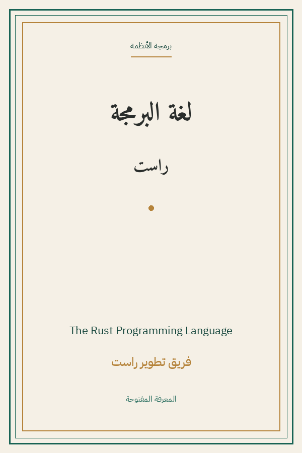

The Rust Programming Language
لغة البرمجة راست
البرمجة والتقنية
MIT/Apache
ترجمة كاملة
كتاب لغة البرمجة راست الرسمي: الملكية والاستعارة ودورات الحياة، البنى والتعداد والمطابقة، الوحدات والحاويات، معالجة الأخطاء، المكرّرات والذعر، الأدوات الذكية، الاختبار والقوالب غير الآمنة — الكتاب الرسمي كاملًا.
| المؤلف | فريق تطوير راست (Steve Klabunik وCarol Nichols والمجتمع) — The Rust Project (Steve Klabnik & Carol Nichols) |
| سنة النص الأصلي | ٢٠٢٤ |
| كلمات المصدر (الإنجليزية) | ١٧٨٦٦٥ |
| كلمات الترجمة (العربية) | ١٤٣٦٧٩ |
| مقاطع الترجمة المدققة | ١٢٣ |
| مدة القراءة التقريبية | ≈ ٣٢٦٥ دقيقة |
الترخيص والحقوق: رخصة مفتوحة مزدوجة: MIT أو Apache-2.0 (مشروع راست، doc.rust-lang.org/book).